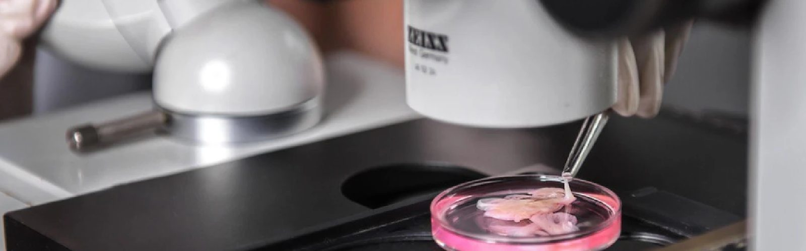
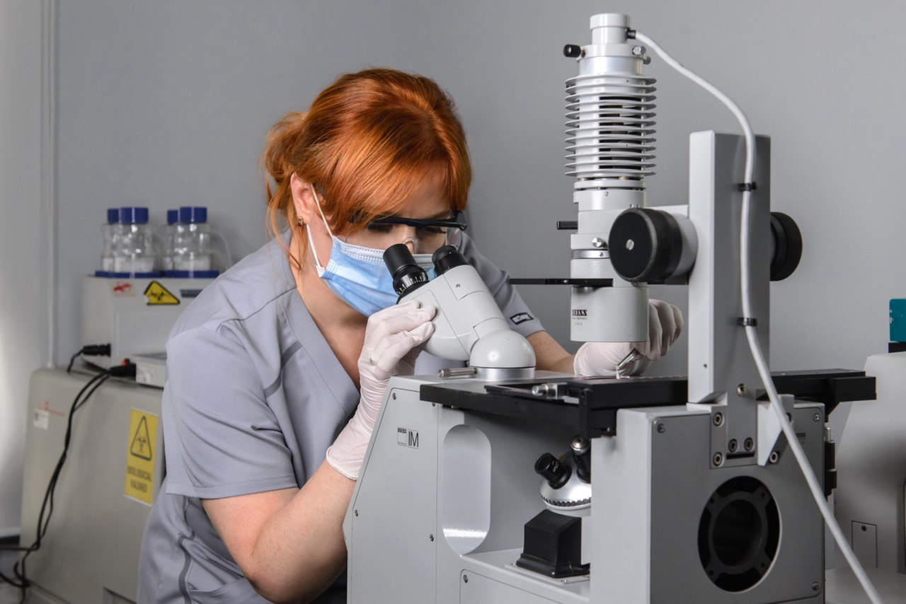
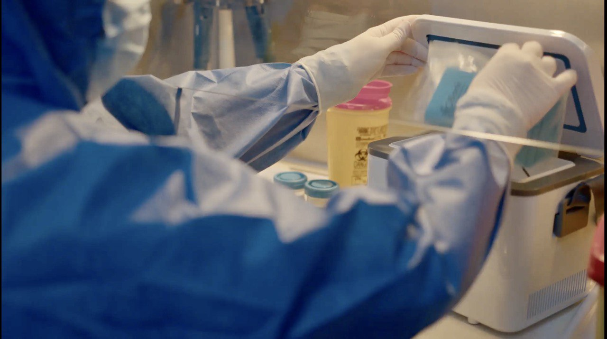
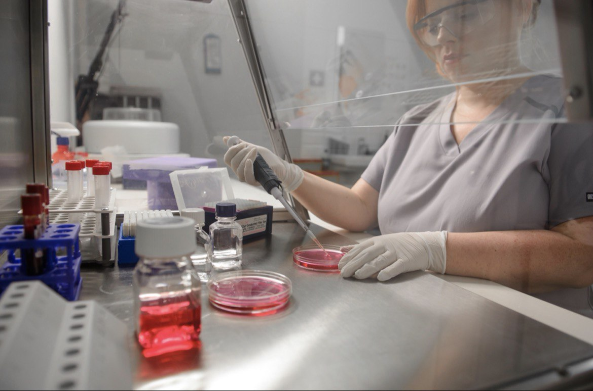
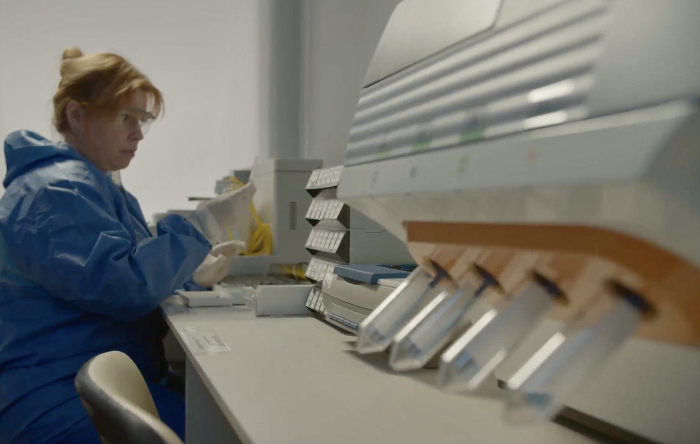
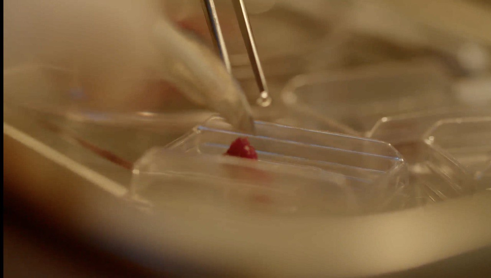
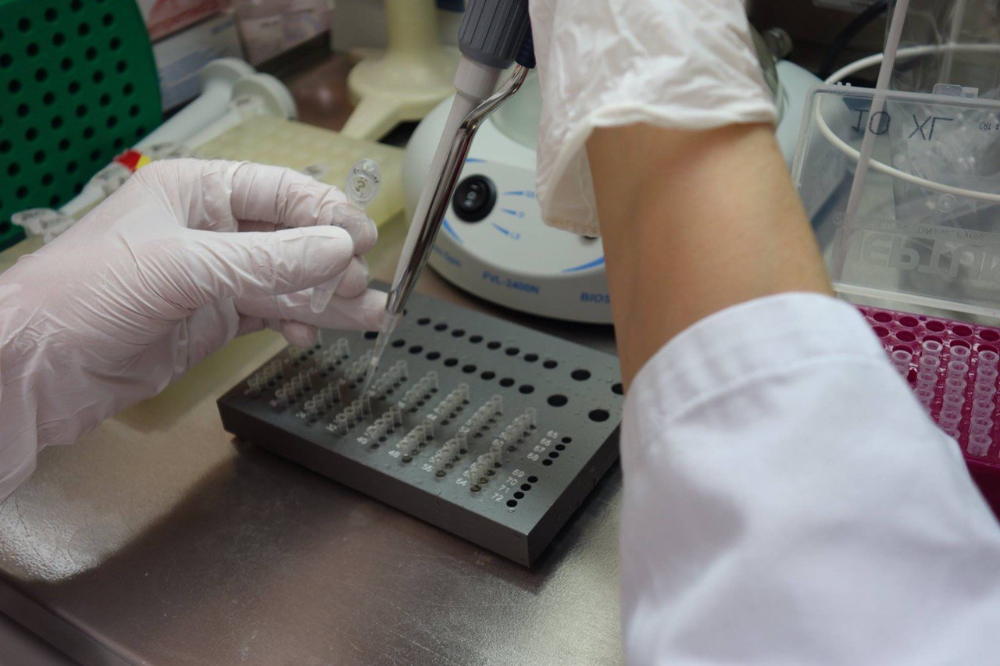
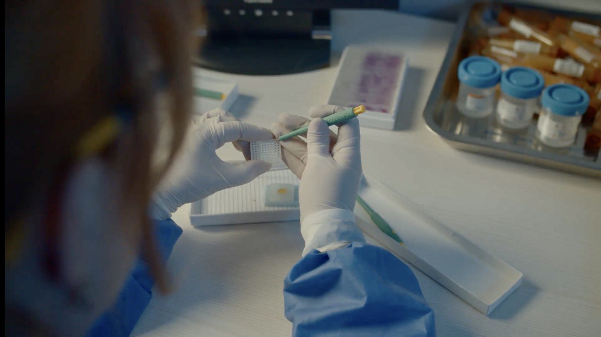

Bank of the human body and inhuman war
02.05.24
A biobank is a type of biospecimen repository that houses a system for analyzing, storing, and monitoring biological samples (typically human) for research purposes. The primary goal of such institutions is to provide researchers with access to data representing a large population.
Samples in biobanks and the data obtained from these samples are often used to find new diagnostic methods and therapies for diseases. This aids scientists, researchers, pharmaceutical companies, and directly benefits patients. One of the first and most notable examples is the plague vaccine, developed by Ukrainian scientist Volodymyr Khavkin in record time.
Before the full-scale invasion, there were 29 biobanks operating in Ukraine. We spoke with the director of the Institute of Cellular Biorehabilitation and president of the Ukrainian Association of Biobanks, Svitlana Gramatyuk, about the resumption of work during the war, partial relocation from Kharkiv to Austria, and the losses and gains of the biobank since February 24, 2022.
"Creating a biobank was inspired by my teacher, Anatoliy Yakovych Tsyhanenko, rector of Kharkiv National Medical University (KNMU),” recalls Svitlana Gramatyuk. "I worked in his department of microbiology, virology, and immunology with virological and bacterial cultures. There was a biobank in the department, known as the 'Museum of Microbiological Cultures.' I became interested in how it worked and how to organize everything properly; Anatoliy Yakovych supported me in this endeavor.”
Svitlana graduated from KNMU and the Medical University of Graz in Austria, where she defended her master’s thesis in biobanking. Today, she is the only specialist in Ukraine with this level of expertise.
Svitlana Gramatyuk founded the scientific biobank, Institute of Cellular Biorehabilitation, in 2008. It is located in central Kharkiv. The institute holds a license from the Ministry of Health of Ukraine for the “Bank of Cord Blood, Other Tissues, and Human Cells” and is the only one among Ukraine’s 29 biobanks to hold international certification ISO 20387 (standard for biobanking). Biobanks have sparked questions about confidentiality, research, and medical ethics. Perspectives on what constitutes appropriate biobank ethics are implemented in this certification.
The biobank collaborates with medical institutions, biotechnological laboratories, and other biobanks, gathering collections of biomaterial from various diseases.

"Patients sign consent for the collection and further research of their depersonalized material, and thus the material enters the biobank,” explains Svitlana. "People voluntarily donate to the biobank, for instance, the remains of their plasma or serum left after diagnostic or preventive examination."
The most common materials in the Institute of Cellular Rehabilitation are cell cultures, fresh frozen tissues, plasma, serum, tears, blood, urine, saliva, and buccal epithelium (oral epithelial cells).
"Every year, the scientific department of the biobank reviews reports from pharmaceutical and biotechnological companies and analyzes which materials will be the most promising for research in the next five years,” explains the director of the institute. "In the last five years, cell culture has held the top spot—these are artificially grown, multiplied, or isolated cells from patients with various diseases, or experimental disease models.”

All biomaterials are stored under specific conditions and have multiple levels of protection.
"Each material has specific storage conditions: -196°C liquid nitrogen vapor, freezing and storage at -80°C, -20°C, or storage at +3–5°C,” explains Svitlana. "All materials are depersonalized, have 2D coding, and undergo quality control using artificial intelligence.”
Life-changing research
In 2017, to unite specialists and institutions for joint research, the biobank, together with the State Institution "Institute of General and Emergency Surgery named after Zaitsev of the National Academy of Medical Sciences of Ukraine" and the consulting group ASK Health, established the Ukrainian Association of Biobanks.
The association aims to develop a network of biobanks for the benefit of patients, researchers, industry, and the economy. Through it, scientific groups receive international grants. The association also independently funds some scientific projects, publishes research results in professional journals, and provides training for specialists.
"The biobank is an integral part of this association because if you don’t have material to research, you can’t do anything,” explains the director.

Research is conducted in six biobank laboratories: genetics, immunology, clinical, biochemistry, biotechnology, and cytology—with the use of modern technologies (e.g., AI) and automated equipment made in the US and Germany.
Before February 24, 2022, more than 30 employees worked at the Institute of Cellular Biorehabilitation. Most of them were doctors of science, professors, and three academicians in the medical field.
Each professor and academician heads a department (e.g., transplantation, cardiothoracic surgery, surgery, or gynecology) and leads their research team, focusing on a specific direction.
"We have three registered studies in the international system, for which we have positive results and patents,” says Svitlana and lists them. "These include Asherman’s syndrome (female infertility), type II diabetes and its complications, and post-viral and various types of liver cirrhosis.
"Two of our professors developed a therapy system for patients with Asherman's syndrome, one of the components of which is stem cells. This problem had long been unsolvable, but they achieved a positive effect from the therapy, and the patients became pregnant. The Ministry of Health of Ukraine approved recommendations for implementing the method in practice."
Additionally, the biobank is involved in diagnosing and screening cancer using phosphorescence, particularly brain cancer.
"Our leading research direction is exosomes isolated from stem cells,” explains the institute director. "Exosomes can be used in clinical practice as carriers for specific drugs, delivering them to target cells and reducing the possibility of mutations, especially in cancer."
Challenges of relocation
On February 24, 2022, Svitlana and her colleagues were at work. The key issues they faced were the preservation of biological samples, the operation of the biobank and laboratories. They decided to convert some laboratories from scientific to clinical use to assist doctors and medical institutions in need.
After that, the dilemma arose: what to do with the biobank. About one-third of the staff—mostly those over 55—stayed in Kharkiv and continued working in the institute, while nearly all the younger employees left. The biobank’s operations halted for the first three days. However, by February 27, employees resumed their duties.
"Employees would come to work, monitoring the processes. At night, during their shifts, they lived there, rotating one another,” says Svitlana.

"Our professors, like ordinary doctors, assisted with complex surgeries in different hospitals in Kharkiv. Our executive director volunteered as a laboratory technician for a long time. Our surgeons lived and worked at the Institute of Emergency Surgery for two months.
"In late February and March, most of the biological material was evacuated from the institute. The most challenging part was deciding which material required priority evacuation. Medical knowledge and the triage method of prioritizing wounded based on their injuries were applied to the unique characteristics of biological samples.
To evacuate the material, specialized transport was rented. The team handled the evacuation independently. In Europe, they encountered difficulties as no one wanted to accept biomaterial from a war-torn country.
"In Ukraine, we were able to find vehicles with temperature control, liquid nitrogen, and dry ice, which enabled the relocation of the biobank,” says Svitlana. "The only difficulty was finding drivers, as no one wanted to go to Ukraine. So, the husbands of our employees took the wheel. No one wanted to accept our biological material because it was from Ukraine. They asked: ‘Where is the guarantee that you followed all the norms, rules, and regulations of the European Union for transport under such conditions?’

Thanks to assistance from foreign partners, the biobank and the biotechnological laboratory were relocated to Austria. In April 2022, Svitlana moved to Graz. Now she lives there with her family.
"Graz is my second home, my second alma mater, and the people who helped us and did not refuse us,” she emphasizes. "The Graz Biobank allowed us to store our biomaterial. We established a supporting biobank here. Now it employs 22 people."
Gains and losses
Now, all laboratories at the Institute of Cellular Biorehabilitation in Kharkiv are operational, and employees continue their research. The institute's building was unharmed despite a nearby missile strike.
"Before the war, a video about us was filmed,” Svitlana recalls. "When we left Kharkiv, they sent me that video, and I watched it and cried. The children said, ‘Mom, have you completely lost your mind?’ We never thought anything would remain intact. The first miracle is that the building, biobank, and laboratories were preserved. The second miracle is the people who worked there all this time; without them, nothing would have been preserved.”
At the same time, the number of employees in the biobank has significantly decreased compared to the pre-war period.
"The number of employees has decreased by 70%,” Gramatyuk confirms. "However, overall, the workload has not decreased, so the burden on them has increased. We could not evacuate some of the materials. [Employees are working with the materials] that were preserved while people continue donating their materials even now.”
Since February 24, 2022, numerous publications on the results of research by the Institute of Cellular Biorehabilitation have been released in leading scientific journals: on antibiotic resistance, treatment of type II diabetes complications, as well as screening and early diagnosis of brain cancer.
"Today, there are no methods for early diagnosis and markers of brain cancer,” explains the director of the biobank. "We have developed a method using phosphorescence, i.e., capturing light from blood amino acids, to preliminarily diagnose brain cancer in patients."
Key losses, Svitlana notes, are not material. They include the loss of human resources, the employees who left or passed away, and reputational damage to Ukraine as a country that can provide scientific research.
"The first 8-9 months, almost all doors were open to us, but now that support is gone,” emphasizes Svitlana. "In scientific circles, you can't guarantee and prove safety regarding the risks associated with scientific research in a country at war. Companies or investors are not willing to invest in you for fear that tomorrow a missile could hit the laboratory where you work. Or the lead researcher may not come to work because they were caught in a bombardment or faced other dire war-related circumstances."

"Losses of buildings, equipment, and reagents can be assessed, documented, and somehow compensated. But lost opportunities, lost reputation as a country, and lost human resources are very difficult to evaluate and restore."
During the war, the only country that did not refuse scientists the opportunity to conduct research on Ukrainian territory was Japan. In contrast, EU countries and the US declined to grant funds for such research. Svitlana manages to secure funding for her institute only due to partial relocation to Austria.
"We can sustain our research, our institute, our biobank, our association only through our Austrian legal framework,” Svitlana emphasizes. "We are registered in Austria, have a biotechnology laboratory in Austria, and request grants to distribute them evenly: 50% will be conducted by the biotechnology laboratory in Austria, and 50% by the laboratory in Ukraine.
We receive the grant and pass a portion of the funding [to Ukraine]. The Austrian branch of the Ukrainian Association of Biobanks guarantees quality, effectiveness, and timely execution [of work].”
Investing in a better future
In Austria, the biobank initiated two social programs. The first is the Young Research Group, aimed at helping children as young as 14 years old receive a quality education. The group consists of members of the Ukrainian Association of Biobanks (UAB) under the age of 25, primarily students and young researchers.
"The most important thing, in my opinion, is to support our children, giving them the opportunity to gain the education or study the fields they wish so that they can then rebuild our country,” says Svitlana.
The group addresses one of the primary objectives of the UAB: promoting quality education for future generations of Ukrainian researchers in the field of biobanking and biotechnology. To achieve this, it meets online every three months and strives to hold in-person meetings twice a year during UAB gatherings, offering training or seminars with invited speakers.

The second program being launched is LLP Rehabilitation. The program engages communities and transforms lives through accessible, sustainable prosthetic solutions and rehabilitation services in developing countries. Its goal is to provide comprehensive rehabilitation programs with critical services (custom prosthetics, physical therapy, counseling, social reintegration).
"UAB Austria and the International Association of Innovative Rehabilitation (IAIR) collaborate with international clinics, medical centers, and community groups,” explains Gramatyuk. "We want to help our servicemembers who have lost limbs by bringing them to these clinics and funding their prosthetic treatments.”
These two programs are currently the institution’s priorities.
"We would very much appreciate help with their funding,” emphasizes Svitlana. "With everything else, we can manage on our own.”
With support from the Alfred P. Sloan Foundation and facilitated by IIE.
Photos from the archive of Svitlana Gramatyuk.